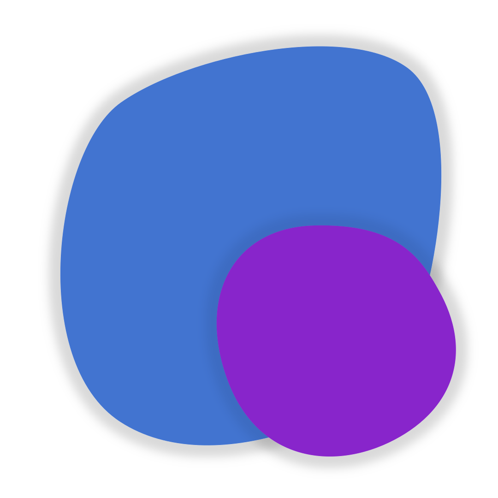

Creator
The Framework was created by SatistileLicence
The project run's under the MIT licenceDiscord
If you need help, feel free to ask at our Discord ServerDocumentation:
Get started:
Welcome at web:frameone. When you want to use the CSS framework, please use the following code.
<link rel="stylesheet" href="https://satistile.github.io/webframeone/resources/webframeone.css">
For the JS framework, please use this.
<script src="https://satistile.github.io/webframeone/resources/webframeone.js">
When you want to use a specific version, then use the following file name scheme at the filenames in the links above.
webframeone-[version].[file type]
To achieve the best responsibility with the framework, you can use the following meta-tags.
<meta name="viewport" content="width=device-width, initial-scale=1.0">
<meta http-equiv="X-UA-Compatible" content="ie=edge">
<meta http-equiv="X-UA-Compatible" content="ie=edge">
Layouts and alignments
Standard side padding
The standard side padding is responsive to the display size and used all over the side.
Standard side margin
The standard side margin is responsive to the display size and used all over the side.
Centered text align
text-align: center is applied here
Block text align
text-align: justify is applied here
Absolute corner alignments
top left
top right
bottom left
bottom right
Text formatting
Underlines
Normal underline
Magenta underline
Blue underline
Red underline
Magenta chunky underline
Blue chunky underline
Red chunky underline
Magenta underline
Blue underline
Red underline
Magenta chunky underline
Blue chunky underline
Red chunky underline
Font-weights
This is a text with the font weight semi-bold.
This is a text with the font weight bold.
This is a text with the font weight bold.
Comment
This is a comment
Tab
<- this is a Tab. Of course without color in the framework.
Code
This is a white code element.This is a whiter code element.This is a white code block.
This is a whiter code block.
This is a black code element.This is a blacker code element.This is a black code block.
This is a blacker code block.
Panels and badges
Panel
White panel
Whiter panel
Black panel
Blacker Panel
Glass panel
White glass panel
Whiter glass panel
Black glass panel
Blacker glass Panel
Badge
This is a white badge.
This is a whiter badge.
This is a black badge.
This is a blacker badge.
Input fields
Text input
Rounded text input
Small text input
Dropdown input
Rounded dropdown input
Small dropdown input
Trigger input
CSS effects
No background
You can do this on every element
Box shadow
Here's a white shadow
Here's a whiter shadow
Here's a black shadow
Here's a blacker shadow
Y-axis transform on hover
Z-axis transform on hover
CSS animations
Skeleton placeholder
Loading spinner
Helpful JS
No background
When you use the method wfo.Scroll() and enter the element to scroll to into the brackets, the page scrolls to this element.
Checkbox state check
With the method wfo.CheckboxChecked(your checkbox), you can check if the checkbox is checked. In the brackets, yóu must write a query selector like #test or .test. The method will return true or false.
Color mode toggle for WFO elements
You can change the color mode with the method wfoColorModeToggle().You might change other aspects of your website when toggling the color modes, because this method only effects elements of the Framework. With the class no-color-mode-toggle, you can disable the color change.